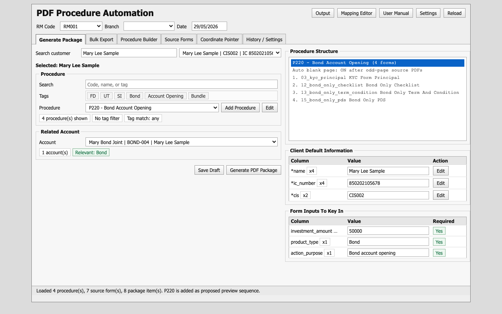
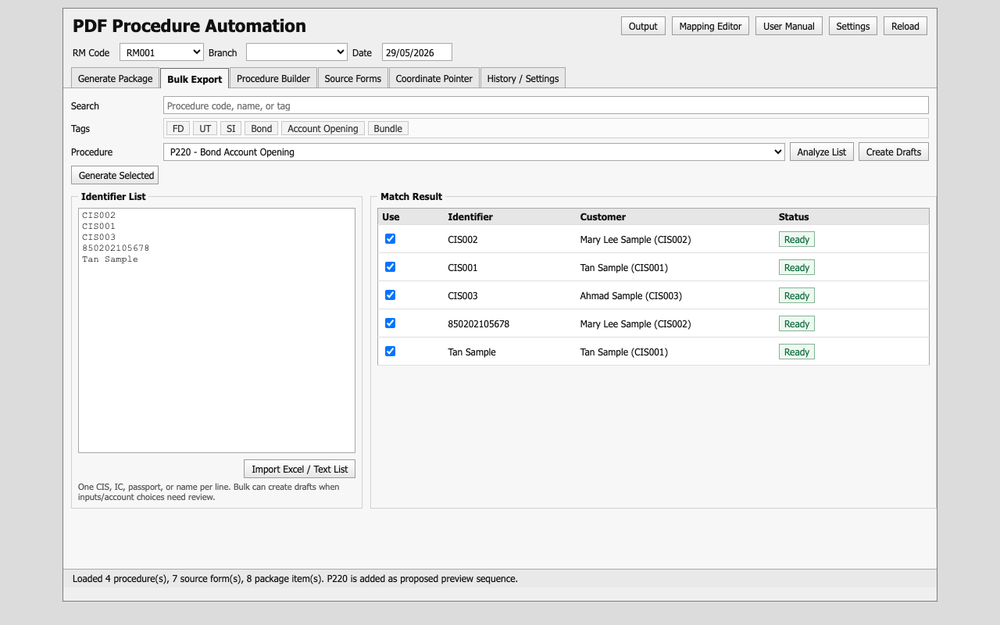
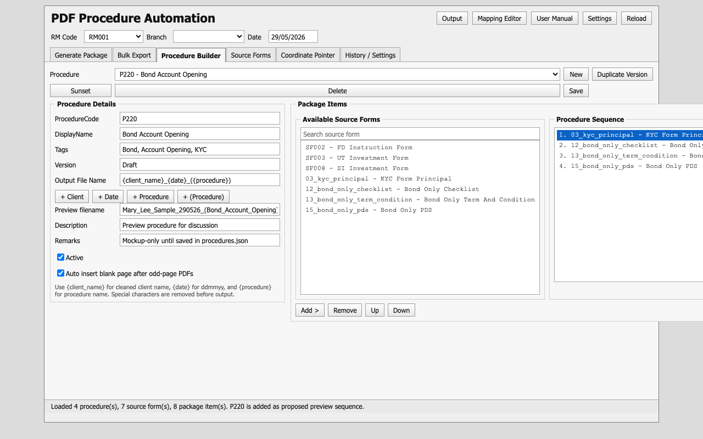
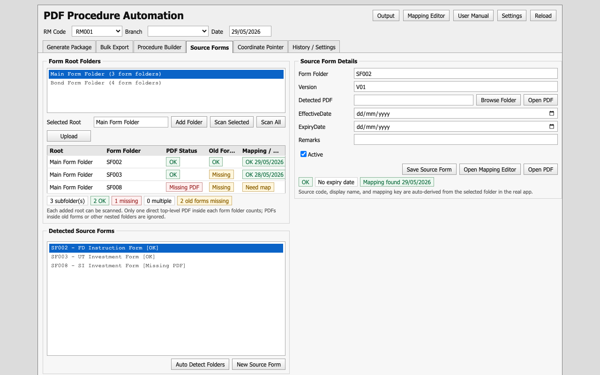
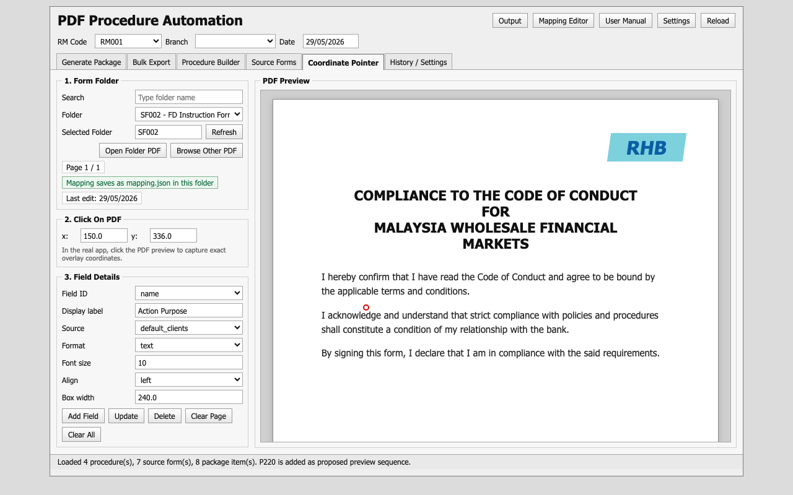
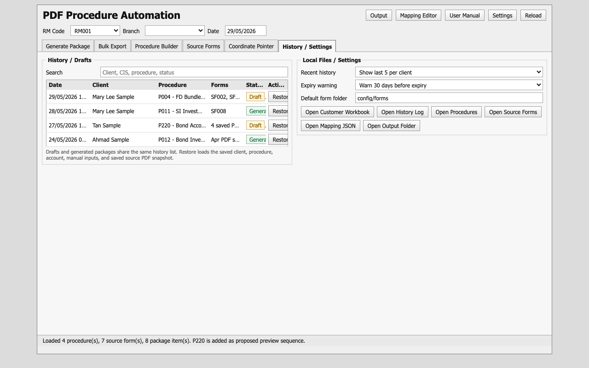

PDF Procedure Automation User Manual
This guide explains the daily workflow for the offline PDF Procedure Automation Tool.
1. Start The App
- Open
FormFiller.exe. - Check
RM Code,Branch, andDate. - Leave
Branchblank if no branch should be printed. - Use
Outputto open the generated PDF folder. - Use
User Manualto open this guide. - Use
Reloadafter changing Excel/config/form folders.
2. Generate One PDF Package

- Go to
Generate Package. - Search customer by name, IC, passport, or CIS.
- Select the correct customer from the dropdown.
- Search/select the procedure. Tags are optional filters, and tag matching is
Any. - Select the related account if the procedure needs UT/Bond/SI/account information.
- Review
Procedure Structureto confirm the form sequence. - Review
Client Default Information / Form Inputs. Default Excel fields show only if used by the selected procedure.x2,x4, etc. means usage count in this procedure. - Click
Save Draftif the package is not ready. - Click
Generate PDF Packagewhen ready.
Source Forms.3. Bulk Export

- Go to
Bulk Export. - Search/select one procedure for the batch.
- Paste one CIS, IC, passport, or customer name per line.
- Click
Analyze. - Review
Match Result. Double-click a row to include or exclude it. - Click
Create Draftsif rows still need manual input. - Click
Generate Selectedonly when selected rows are ready.
Bulk currently uses one selected procedure for all rows. Use separate batches if customers need different procedures.
4. Procedure Builder

- Go to
Procedure Builder. - Select an existing procedure or click
New. - Set procedure code, display name, tags, version, and output file name.
- Use output filename tokens:
{client_name},{date}as ddmmyy, and{procedure}. - Add source forms from the left list into the right sequence.
- Use
Up/Downto arrange the sequence. - Keep auto blank page insertion on unless there is a reason to override it.
- Click
Save.
Use Duplicate Version before amending an old procedure. Use Sunset to make an old procedure inactive. Use Delete only for cleanup where no history depends on the procedure.
5. Source Forms

- Go to
Source Forms. - Add one or more form root folders.
- Select a root folder and click
Scan. - Review PDF status, old forms folder status, effective date, expiry date, mapping status, and last mapping edit.
- Select a source form to edit folder/path, version, dates, remarks, and active status.
- Click
Open Mapping Editorto map fields.
old forms/. Nested PDFs are ignored by the active scan.6. Coordinate Pointer

- Go to
Coordinate Pointer. - Search/select the form folder.
- Open the folder PDF.
- Click on the PDF preview to capture
xandy. - Select field ID / Excel field, source, format, font size, alignment, and box width.
- Click
Add FieldorUpdate. - Save the mapping.
The preferred mapping location is mapping.json inside the selected form folder. The central mapping config is still written for compatibility.
7. History / Settings

- Go to
History / Settings. - Search by client, CIS, procedure, or status.
- Select a row.
- Click
Open / Restoreor double-click the row.
Drafts and generated packages are stored together. Restoring loads saved customer, procedure, account, and manual inputs. Generated history records include a form manifest showing which source PDFs/mappings were used.
8. Common Checks Before Generating
- Customer selected is correct.
- Related account is correct.
- Procedure structure has the expected forms.
- Required inputs are filled.
- Source Forms scan has no missing/multiple active PDF issues.
- Expiry date warnings are resolved or accepted.
- Output folder is correct.
9. Troubleshooting
Excel workbook cannot be edited
Close clients.xlsx and try again. The app makes backups before writing default-field edits.
Source form cannot generate
Check for missing PDF, multiple direct PDFs, expired form, not-yet-effective form, or missing mapping in Source Forms.
Field appears in wrong position
Open Coordinate Pointer, select the form folder, adjust the field position, and save mapping again.
Bulk row is not ready
Create a draft first. Restore the draft from History / Settings and complete the missing inputs manually.